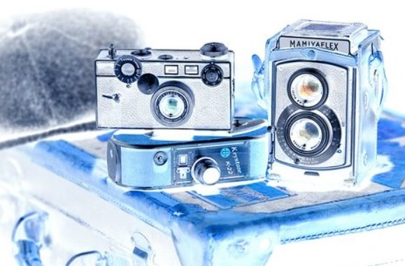

About
Jatoba Photos é uma empresa de fotografia, edição de imagens e design gráfico. Prezamos pelo gosto na produção de nossas criações artísticas.
Photo

Quando você fotografa pessoas em cores, você fotografa suas roupas. Mas quando você fotografa pessoas em P&B, você fotografa suas almas.
Retouch
O retouch...
GraphDesign
O graphdesign é ...
Nosso escritório
Nosso escitório é localizado no coração do concelho.